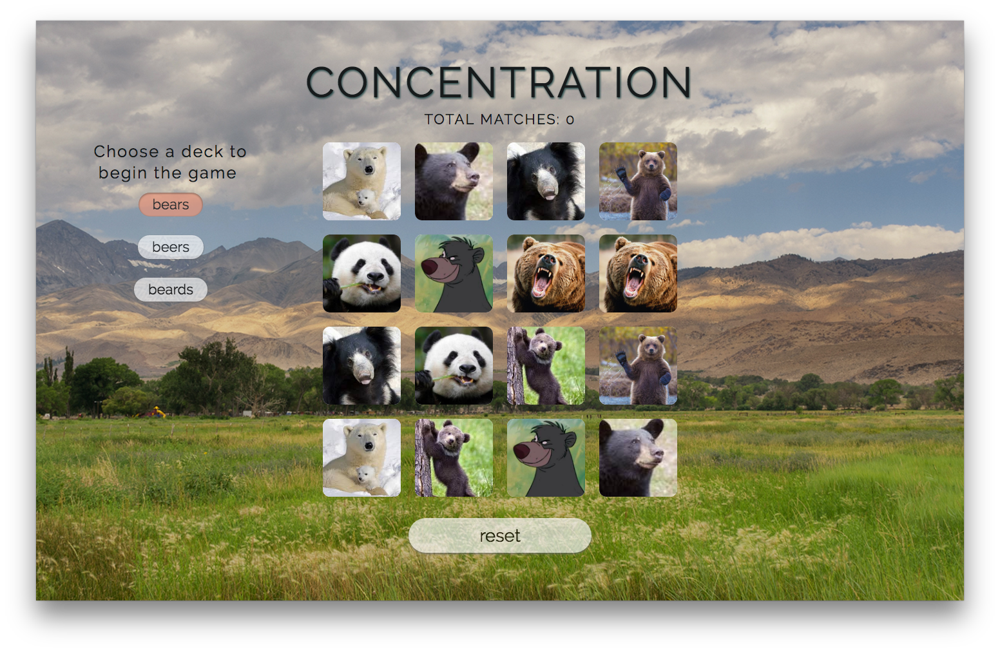
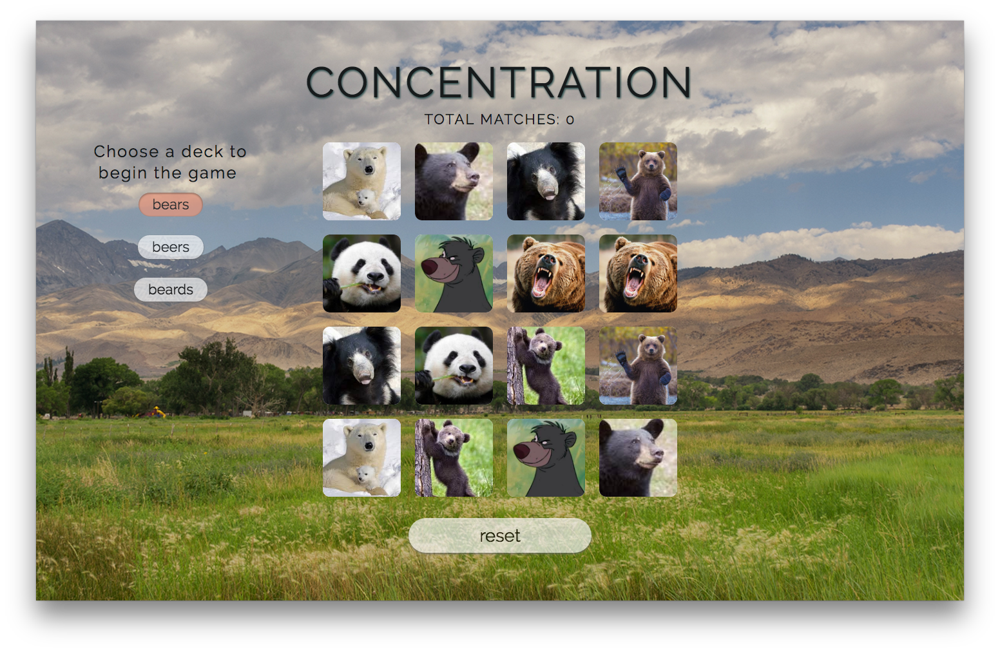

I'm Julia, a fiercely loyal, adventure-seeking full stack web developer and creative problem solver who believes in the power of technology for good. I approach every endeavor with enthusiasm and a consistent eye for opportunities to improve and innovate. I enjoy the brainstorm, but love the execution. Ask me about the 2 foot tall remote-controlled llama I built in fourth grade!
Born and raised in Minnesota, I moved to Washington DC in 2009 to attend American University. I received a dual degree in International Studies and Economics in 2013. During college I worked at the campus coffee collective slinging cappuccinos, studied abroad in India, took a course at The London School of Economics, and worked at a nonprofit organization that operates an online crowdfunding platform. After college, I spent several years in a project management role at an International Development consulting firm and I completed General Assembly's Web Development Immersive Program in August 2016. Now, I'm a web developer living in the Bloomingdale neighborhood of Washington, DC.
Languages, Frameworks, Protocols:
JavaScript | jQuery | HTML | CSS | Ruby | Ruby on Rails | AngularJS | Express.js | Websocket | ReactJS
Management & Deployment:
Git | GitHub | Heroku
Databases & ORMs:
SQL | PostgreSQL | Active Record | Mongo | Mongoose
Methodologies:
Object Oriented Programming | MVC Pattern | Test-Driven Development | Responsive Design | Authentication | User Stories | ERDs | Wireframing
Travel, NPR's All Songs Considered Podcast, breakfast foods, the Washington Wizards, live music, coffee, baking with real butter, drinking and brewing beer, and all things Minnesota...except the cold.
Moves via bike, snowboard, airplane or train.
An application to keep job seekers productive and organized - built using ReactJS and Ruby on Rails.
GitHub RepoExplore upcoming concerts in your city, and add new gigs for others to explore. This application has an AngularJS frontend and Ruby on Rails serves a custom API supporting the backend.
GitHub Repo

This is a Ruby on Rails application that I built one week after learning Rails. This app allows users to explore DMV breweries and the beers they offer, add favorite beers to their profile, and also save particular breweries to their 'route'.
GitHub Repo

I built this using Express and MongoDB. It is hosted on Heroku using mLab to support the database.
GitHub Repo

 

This is the first project I built in WDI at General Assembly. I built this Concentration game using jQuery. The game gives users the option to choose from three different card decks, bears, beers, and beards. Sure to provide hours - at least minutes - of fun!
GitHub Repo

This is the first website I built from scratch! I designed and built this in a college Graphic Design class. I used Adobe Illustrator to create the design elements and built the page using HTML and CSS. Sadly, this event was completely made-up and Ron Swanson has not (to my knowledge) given a talk at AU to date.
+1 (952) 484 6757
julia.schultz91@gmail.com
@juliatr0n